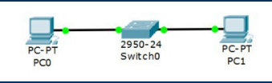
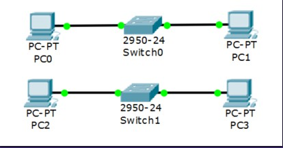
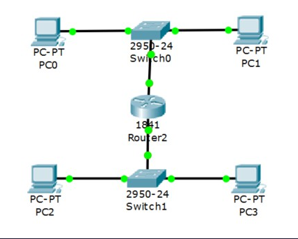
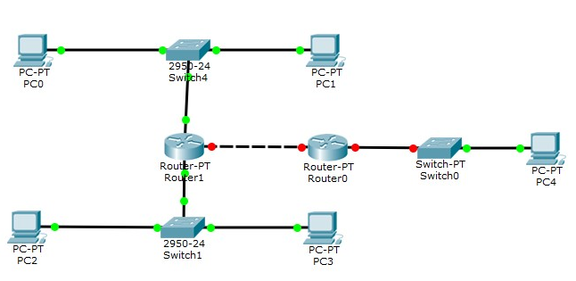
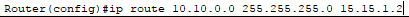
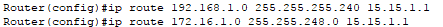
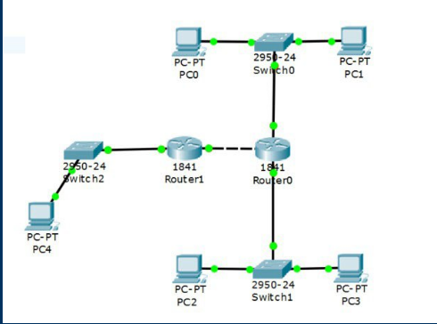
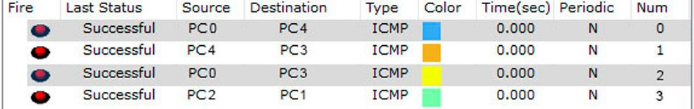

Настройка локальной сети передачи данных:
Настройка коммутаторов и маршрутизаторов
Вариант №1
Расчет диапазона сетей
| |
LanA |
LanB |
LanC |
| Количество узлов |
9 |
1765 |
190 |
| Subnet |
192.168.1.0 |
172.16.1.0 |
10.10.1.0 |
| Mask |
255.255.255.240 |
255.255.248.0 |
255.255.255.0 |
Broadcast |
192.168.1.15 |
172.16.8.255 |
10.10.1.255 |
ШАГ 1: Разместить на рабочем поле коммутатор и два компьютера и соединить их

ШАГ 2: Добавить на рабочее поле еще один коммутатор с двумя компьютерами и настроить адресацию из другой подсети

ШАГ 3: Соединить коммутаторы между собой и проверить работоспособность сети (Не работает, так как коммутаторы подсоединяются только к маршрутизаторам)

ШАГ 4: Добавить маршрутизатор на рабочее поле

ШАГ 5: Добавить на рабочее поле еще один маршрутизатор. Подключить к нему коммутатор и компьютер
ШАГ 6: Соединить между собой маршрутизаторы и настроить между ними сеть с префиксом /30

ШАГ 7: Проверить работоспособность сети, отправив сообщение сети A в сеть С и из сети В в сеть С

ШАГ 8: В случае неработоспособности сети объяснить причины
На маршрутизаторах не настроена статическая маршрутизация.
ШАГ 9: Настроить статическую маршрутизацию между сетями
От Router1 к Lan C, От Router0 к Lan A, от Router0 к Lan B:


Результат:

Расчет диапазона сетей
| Устройство |
IP-адрес |
Маска |
Шлюз |
| PC0 |
192.168.1.14 |
255.255.255.240 |
192.168.1.1 |
| PC1 |
192.168.1.13 |
255.255.255.240 |
192.168.1.1 |
| PC2 |
172.16.8.254 |
255.255.248.0 |
172.16.1.1 |
| PC3 |
172.16.8.253 |
255.255.248.0 |
172.16.1.1 |
| PC4 |
10.10.1.254 |
255.255.255.0 |
10.10.1.1 |
| R0 0/0 |
192.168.1.1 |
255.255.255.240 |
|
| R0 0/1 |
172.16.1.1 |
255.255.248.0 |
- |
| R0 0/2 |
15.15.1.2 |
255.255.255.252 |
- |
| R1 0/1 |
10.10.1.1 |
255.255.255.0 |
- |
| R1 0/2 |
15.15.1.1 |
255.255.255.252 |
- |
Установить банер на сетевое оборудование: banner motd [баннер]
Проверка работоспособности сети:

Пакеты успешно отправлены